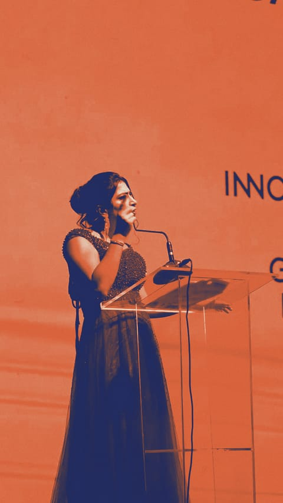

Column स्तंभIssue 01 · p. 16
On the mic
माइक पर
This issue इस अंक मेंOpening an awards night एक पुरस्कार समारोह की शुरुआत
“Before anyone else, give yourselves the loudest round of applause for making it here this evening.”
“You’re looking spectacular. Make some noise for yourselves. Come on.”
Opening the Annual Achievers Awards for Datamatics · Jio World Convention Centre, Mumbai → hear it on p. 17

Plays in full colour, with automatic captions. पूरे रंग में, स्वचालित कैप्शन के साथ।
Every voice in this issue इस अंक की हर आवाज़
- p. 8 ▶ 0:19 Raychem RPG, GoaThe room answers
- p. 10 ▶ 0:11 Nexa at YouTube FanFestThe room answers
- p. 11 ▶ 0:19 Project EveThe room answers
- p. 17 ▶ 0:18 Datamatics, MumbaiThis page
- p. 26 ▶ 0:29 A virtual rewards and recognition ceremonyQuestions and answers
Hosting languages: English and Hindi.